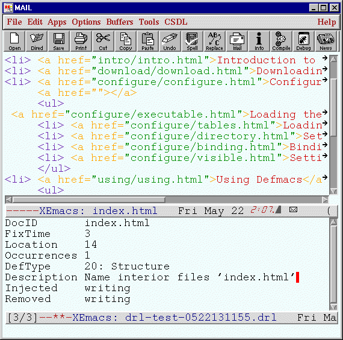

Last modified: Fri Jul 16 11:29:43 HST 1999
However, this independence comes at a cost: if you discover the need to record some time, size or defect data while working in one of these environments, you must switch to the appropriate Leap tool to record the information and then switch back to the environment you were working in. This "context switching" can be somewhat disruptive. In addition, it can sometimes involve manually copying (or cutting and pasting) information from the environment into the Leap tool, which can seem time-consuming and lame.
For example, although Leap tools such as Honu and Mano can be used to collect defects, in some cases defects can be collected more efficiently by direct integration of Leap-aware facilities into the software development environment. Defmacs is one example of such an approach. Defmacs is a system that extends the XEmacs programmable text editor to support more efficient collection of structured defect information for use in Leap. Specifically, Defmacs is designed to support in-process defect collection. In-process defect collection occurs when the developer notices in the midst of some task that a defect has occurred and wishes to record information about that defect, then return quickly to the task at hand. (In-process defect collection contrasts with technical review, in which the task at hand is the collection of defects.)
Let's begin by showing what Defmacs looks like:

This image shows a simple example use of Defmacs. In this case, the user is editing a file using XEmacs and discovers that some files are named incorrectly. To record the defect, the user types c-c c-[ which splits the screen in two and displays a Defmacs window in the bottom half of the window. After entering in the relevant data, the screen looks as shown above. Typing return saves the defect information out to a file that can be read by the Leap toolkit, and returns the window configuration to its original state for continued work.
The principal advantage of Defmacs (and other similar Leap-compliant software) is their ability to exploit tight integration with the actual work product development environment. For example, Defmacs can be configured to automatically record data such as the file name and location of the defect, based upon the file that was being edited at the time Defmacs was invoked. Defmacs also has an interface to the Emacs compilation mode which allows the user to record a compilation error as a defect with a single mouse click.
Defmacs has limitations as well. It does not support analysis of defect data, only collection. In order to perform analysis, the user must load the files containing defect data produced by Defmacs into the Leap toolkit. Furthermore, Defmacs-generated defect data is stored in a special form of Leap data file that can be read by Leap tools but not written by them. Thus, defect information transfer is "one-way", from Defmacs to Leap. While you can record a defect in Defmacs, load the resulting file into Leap, and display it using Honu, the reverse is not possible in the current implementation.
The remainder of this chapter goes into more detail on how to use Defmacs. The next two sections explain how to download Defmacs and configure it for use with XEmacs. The following section explains how to use Defmacs during XEmacs editing sections.
(require 'dfm "~/Defmacs/dfm-2.4.1.elc")This will load the defmacs executable each time you start emacs. Using require simply ensures that defmacs will be loaded at most once.